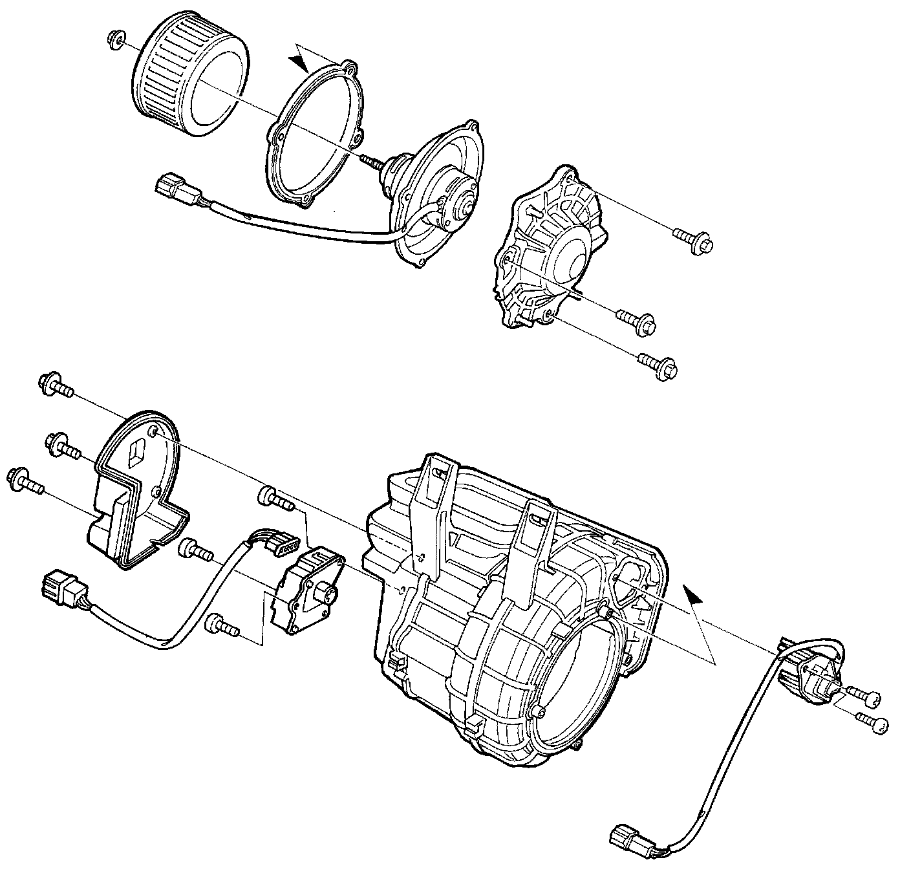
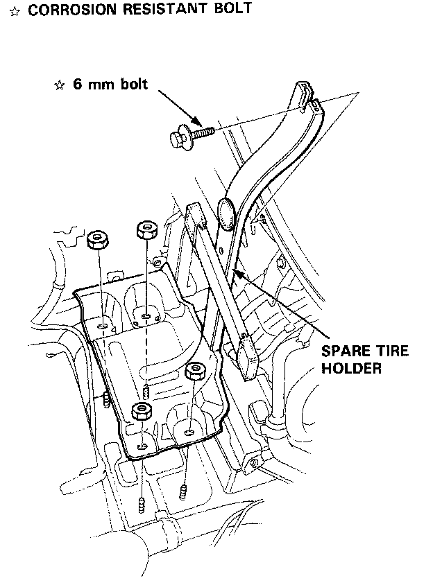
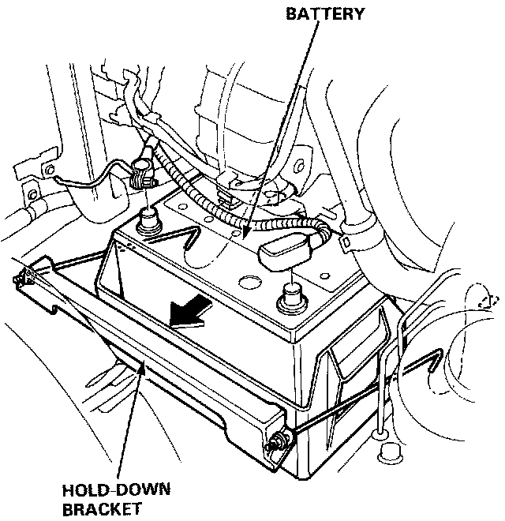
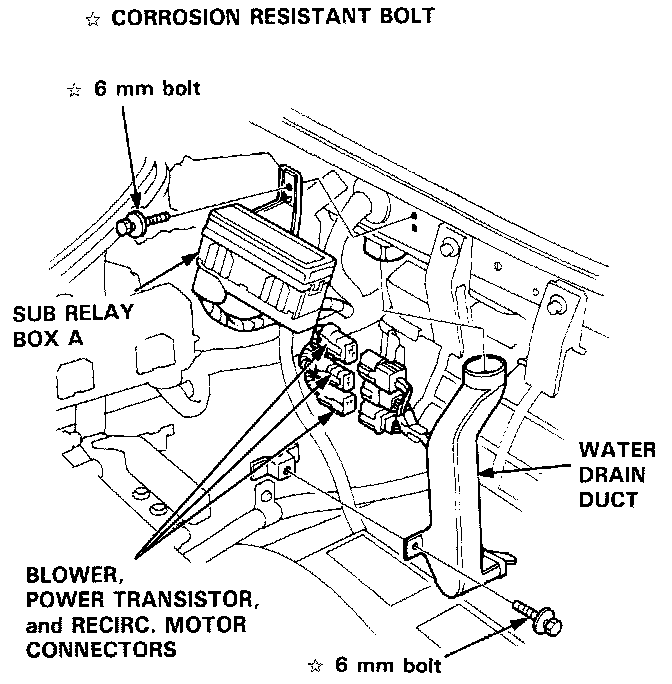
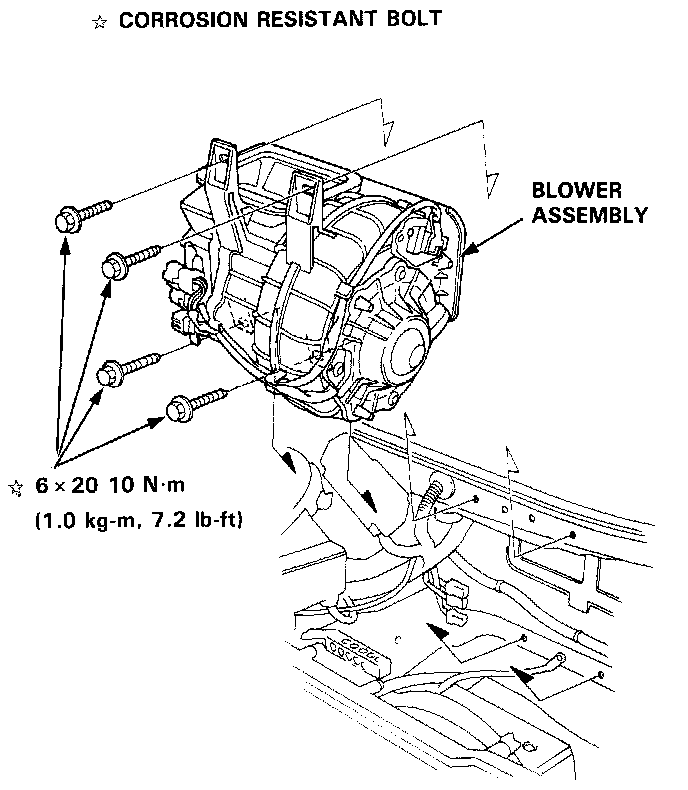

Blower Motor: Service and Repair
Blower Replacement
1. Remove the spare tire (refer to Owner's manual).

2. Remove the spare tire holder.

3. Disconnect the battery cables, loosen the hold-down bracket nuts, and remove the hold-down bracket.

4. Remove the sub relay box A and the water drain duct. Disconnect the connectors from the blower, power transistor and recirculation control motor.

5. Remove the blower mounting bolts, then remove the blower.
6. Install the blower in the reverse order of removal, then make sure it runs and doesn't leak any air.